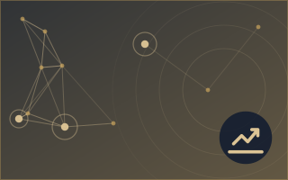
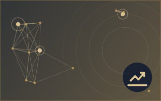
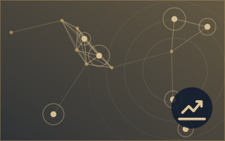
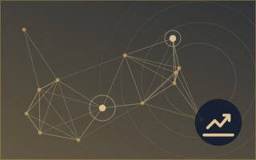

Inflation et taux d'intérêt
Les titres sont affichés en anglais, tels que publiés.



Gold prices edge lower as US inflation data reinforces Fed outlook
KUALA LUMPUR: Gold prices eased in early Asian trade on Friday after falling more than one per cent in the previous session, as persistent US inflation fuelled expectations of further Federal Reserve… de New Straits Times
5.2Importance
3.0Risque · modéré
84%Confiance
Ailleurs dans Économie, finance et marchés
Plus ›Les autres rubriques de Économie, finance et marchés en ce moment.








